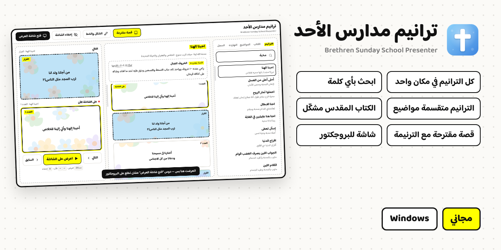

برنامج مجاني لعرض ترانيم مدارس الأحد والكتاب المقدس على البروجكتور.
بعد ما الملف يخلص تحميل افتحه. لو ظهرت شاشة زرقا: دوس More info وبعدين Run anyway (أول مرة بس).
📄 طريقة التسطيب بالصور (PDF)
البرنامج بيحدّث نفسه لوحده لما تنزل نسخة جديدة.